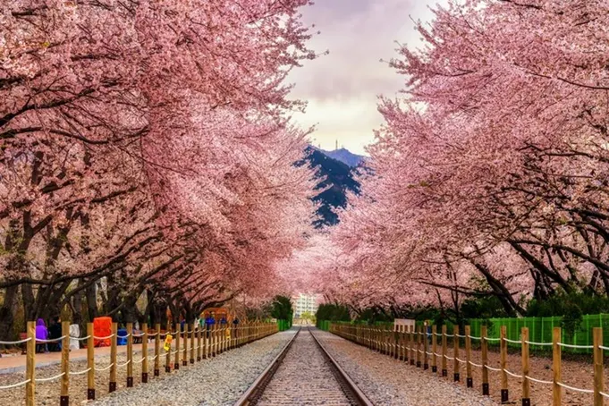
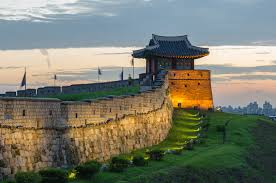

Is it because of its rich culture, history, music, food, or personal experiences? Maybe K-pop, K-dramas, or even a trip to Korea made an impact on you? I'd love to hear what makes it so meaningful to you!
You can reach South Korea by flying into Incheon International Airport, the country’s main gateway, with direct flights available from major cities worldwide. Travelers from nearby countries like Japan or China can also take ferries to Korean ports. Once in Korea, getting around is convenient with high-speed KTX trains, buses, and domestic flights. The well-developed subway systems in Seoul and other cities make exploring different areas easy and efficient.